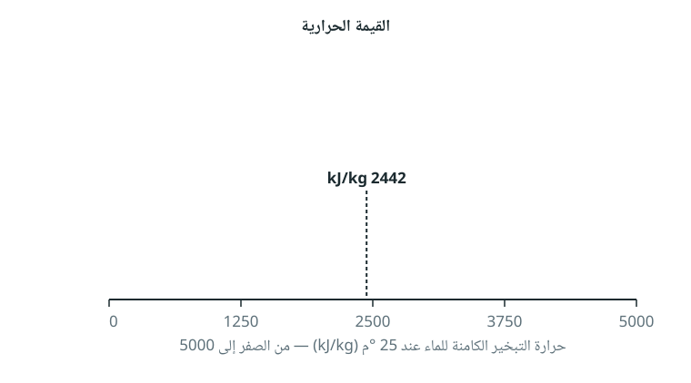

القيمة الحرارية
Heating value
القيمة الحرارية هي كمية الحرارة المنطلقة من احتراق وحدة كتلة أو حجم من الوقود، وتُقاس بالميغاجول لكل كيلوغرام. تُفرَّق إلى عليا ودنيا بحسب مصير بخار الماء.
القيمة الحرارية للوقود هي كمية الحرارة المنطلقة عند احتراقه احتراقاً تاماً، منسوبةً إلى وحدة كتلة أو وحدة حجم. وتُفرَّق إلى قيمتين: العليا التي تُحسب مع تكثيف بخار الماء الناتج واسترداد حرارة تكثيفه، والدنيا التي تُحسب مع بقاء الماء بخاراً وحمله لتلك الحرارة معه. والفرق بينهما يساوي كتلة الماء المتولّد مضروبة في حرارة التبخير الكامنة. وهذا التمييز ليس تفصيلاً نظرياً: الأجهزة التي لا تكثّف نواتج الاحتراق — كالمحرّكات والغلايات التقليدية — لا تستفيد إلا من القيمة الدنيا، فاستعمال العليا في حساب كفاءتها يضخّم النتيجة. والغلايات التكثيفية تسترد جزءاً من الفرق. مثال: الميثان قيمته الحرارية الدنيا 50.0 MJ/kg والعليا 55.5 MJ/kg، والفرق 5.5 MJ/kg يقابل تكثيف 2.25 كغ ماء لكل كيلوغرام ميثان.
كيف تعمل الظاهرة؟
القيمة الحرارية تنشأ من فرق طاقة الروابط بين المتفاعلات والنواتج. في الاحتراق، روابط الوقود الهيدروكربونية وروابط الأكسجين تُستبدل بروابط الماء وثاني أكسيد الكربون، وطاقة النواتج أقل، فالفرق يُطلق حرارة. وحين يحتوي الوقود هيدروجيناً، ينتج الماء. وحين يبرد هذا الماء إلى ما دون نقطة تكثيفه، تُسترد حرارة التبخير الكامنة، فيرتفع المقدار المستفاد إلى القيمة العليا. وحين يبقى بخاراً كما في عادم محرّك، تُحمل تلك الحرارة إلى الجو وتُفقد. ولهذا يعتمد الفرق بين القيمتين على محتوى الهيدروجين في الوقود: الميثان ذو أعلى نسبة هيدروجين بين الهيدروكربونات، ففرقه أكبر نسبياً.
العلاقة بالأرقام
LHV = HHV − m_H2O·h_fg. وm_H2O = 9 × w_H حيث w_H الكسر الكتلي للهيدروجين في الوقود. وحرارة التبخير الكامنة للماء عند 25 °م 2441.7 kJ/kg. مثال عددي: الميثان CH₄، w_H = 4×1.008/16.043 = 0.2513، فـm_H2O = 9 × 0.2513 = 2.262 kg/kg؛ والفرق = 2.262 × 2.4417 = 5.52 MJ/kg. والقيمة العليا 55.5 MJ/kg تعطي دنيا 49.98 MJ/kg، مطابقة للمعلن 50.0.
مفاهيم متقاربة
القيمة الحرارية ليست الكفاءة ولا القدرة. وليست حرارة الاحتراق الأدياباتية، التي تعطي درجة حرارة اللهب وتحتاج حساب الاتزان الكيميائي والتفكك. وليست كثافة الطاقة الحجمية، وإن اشتُقّت منها بالضرب في الكثافة. والخطأ الشائع أن تُقارن وقودات على أساسين مختلفين: غاز طبيعي بالقيمة الدنيا وبنزين بالعليا يعطي مقارنة مضلّلة بفارق 10%. وأخيراً القيمة الحرارية ليست ثابتاً للمادة، فهي تعتمد على التركيب الفعلي للوقود وعلى درجة الحرارة المرجعية.
حدود التطبيق
القيمة الحرارية لا تصف جودة الاحتراق: وقود بقيمة حرارية عالية قد يحترق ببطء أو بدخان. ولا تصف الانبعاثات، فمحتوى الكبريت والنيتروجين لا يظهر في القيمة الحرارية. وفي الوقودات الحيوية والخلائط، يتغير التركيب من دفعة إلى أخرى، فالقيمة الواحدة تقريب. ولا تُستعمل القيمة الحرارية للتنبؤ بسلوك الاشتعال كرقم أوكتان أو رقم سيتان، فذلك خاصية اشتعال لا طاقة.

| الكمية | القيمة | المصدر |
|---|---|---|
| حرارة التبخير الكامنة للماء عند 25 °م | 2441.7 kJ/kg | [1] |
| كتلة الماء المتولّد من احتراق 1 kg ميثان | 2.25 kg | [3] |
المصادر
- 1 NISTIR 5078 — Thermodynamic Properties of Water, 0 to 374 C and Pressures to 100 MPa (IAPWS-95 tabulation) — NIST — National Institute of Standards and Technology (1998). www.nist.gov/publications/thermodynamic-properties-water-temperatures-0-374-c-and-pressures-100-mpa · اطُّلع عليه 2026-11-21
- 2 CODATA Value: molar gas constant — NIST — CODATA 2022 recommended values (2024). physics.nist.gov/cgi-bin/cuu/Value?r · اطُّلع عليه 2026-11-21
- 3 The International System of Units (SI), 9th edition (2019) — BIPM — Bureau International des Poids et Mesures (2019). www.bipm.org/en/publications/si-brochure · اطُّلع عليه 2026-11-21
استشهد بهذا المصطلح
الصيغتان مبنيتان من بيانات الصفحة نفسها: العنوان والتاريخ ورابط النسخة المنشورة.
القيمة الحرارية — Heating value. (2026). ديوان المعرفة — انفراد. https://infiradev.com/diwan/terms/term-heating-value.html
@misc{term-heating-value2026,
title = {القيمة الحرارية},
titleaddon = {Heating value},
howpublished = {{ديوان المعرفة — انفراد} — مرجع علمي عربي},
year = {2026},
url = {https://infiradev.com/diwan/terms/term-heating-value.html},
urldate = {2026-11-26},
note = {مراجعة علمية: hermes (مراجعة معتمدة 2026-11-26)}
}
راجعه: hermes (مراجعة معتمدة 2026-11-26) · 2026-11-26 · آخر تحديث 2026-11-21